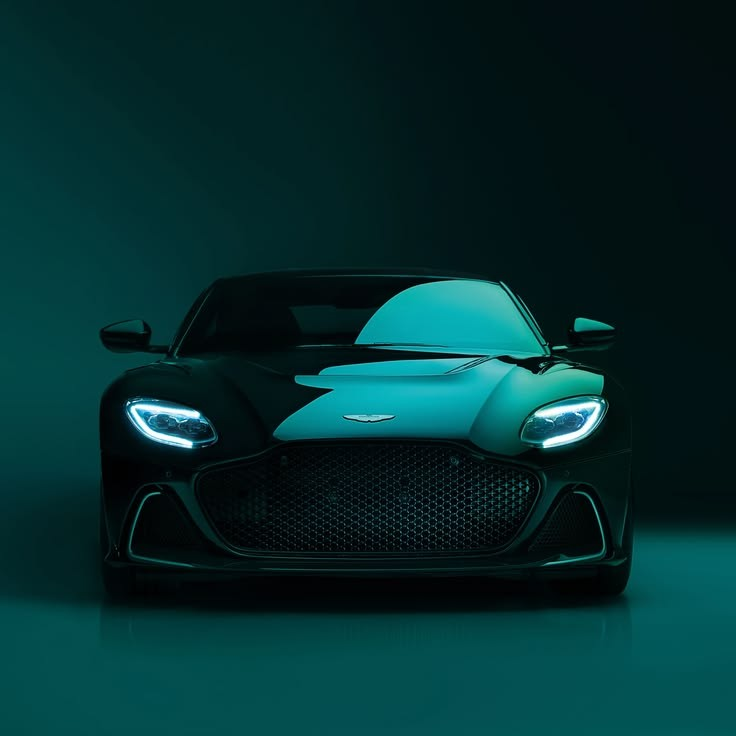
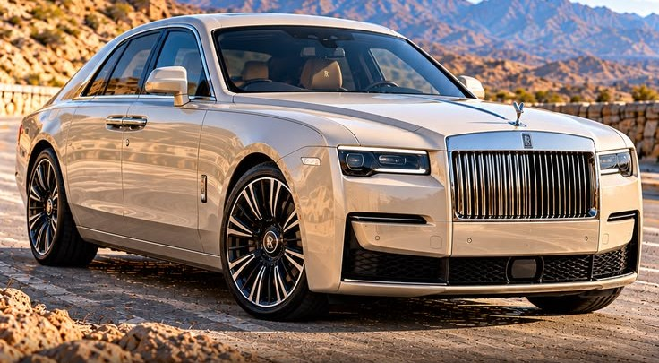
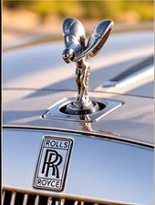
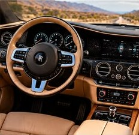
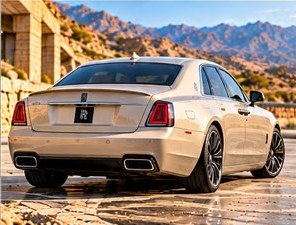

Só V12. Sem exceção.
Doze cilindros.Nenhuma pressa.
Um salão pequeno, com três carros que você não encontra em qualquer esquina. Passe a luz pelo DBS, escolha o seu e marque o dia de sentir o motor.

Passe a luzA coleção
Três jeitos de ter doze.
Aston Martin
DBS Superleggera
O mais bruto dos Aston de linha: muito torque desde baixo e um ronco grave que enche a garagem.

01Ghost de perto
Toque nos detalhes.
Os pontos dourados abrem o que faz um Rolls-Royce ser Rolls-Royce. Começa pelo emblema.



01 · Capô
Spirit of Ecstasy
A estatueta que vai no capô de todo Rolls-Royce. Ela é retrátil: se alguém tentar arrancar, ela some pra dentro do radiador.
Test drive
Monte a chave. Destrave.
Escolha o carro, o dia e o turno. Quando a chave estiver pronta, aperte o cadeado: o pedido vai direto pro WhatsApp.
DBS · escolha o dia
Aperte o cadeado aberto
Abrimos seu WhatsApp com o pedido pronto. Se não abriu, toque abaixo.
Abrir WhatsApp